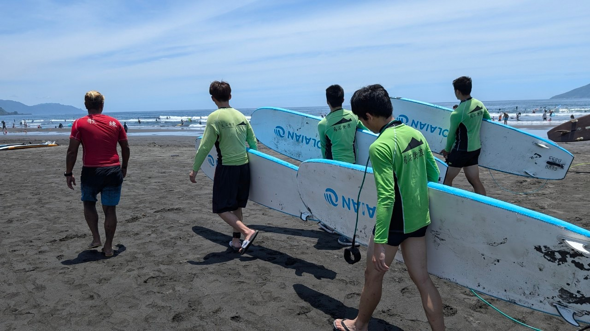
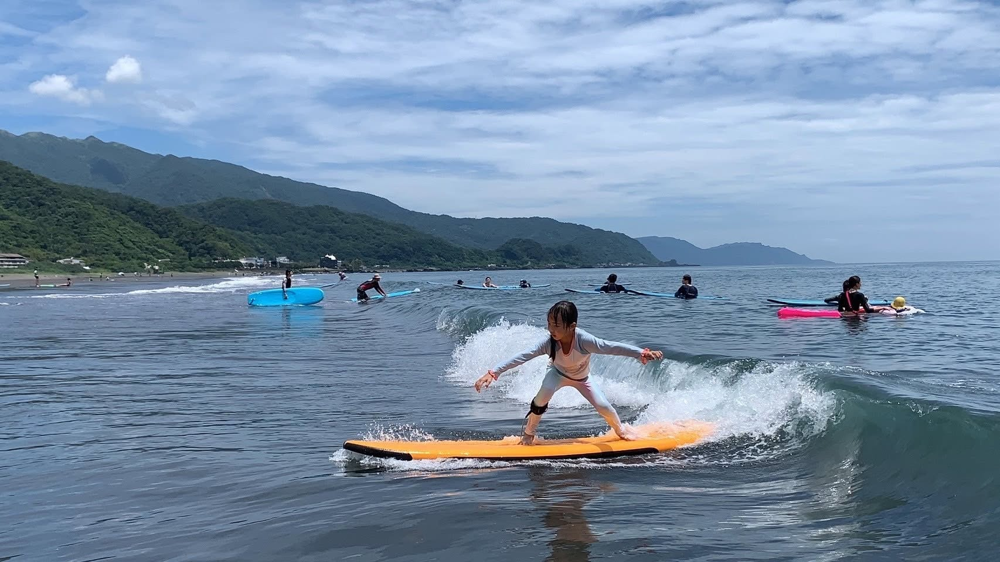
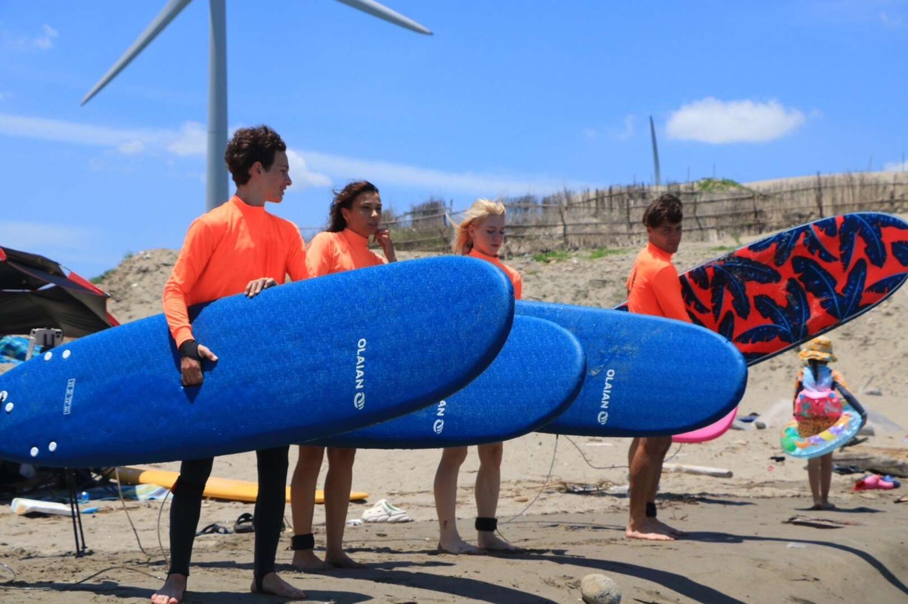
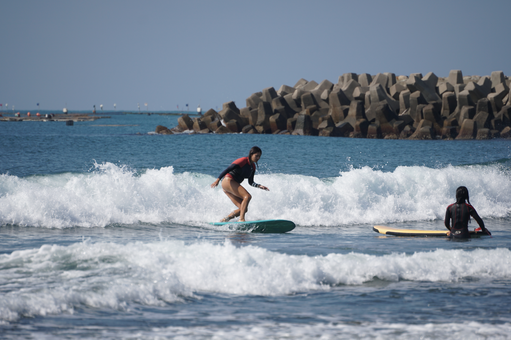

衝浪知識・新手起步
烏石港防波堤內側練習區
台中松柏港（松柏港福德里）
台南漁光島
新手衝浪去哪邊好？北中南推薦浪點
新手選浪點，比起「哪裡浪比較大」，更該問「哪裡出錯的代價比較低」。三個簡單原則：地形以沙灘為主、避開整片礁岩區；浪高最好落在機器人 GoOcean 分級的 🟢 初學區間（浪高 1.2m 以下、週期 7 秒以下）；離岸流少，或至少流的位置固定、看得出來。
北部：烏石港
沙灘與礁岩混合地形，衝浪教室聚集地，租板、換裝設施齊全。防波堤內側是主要練習區，退潮前後兩小時浪型比較有型。但防波堤北側礁岩區退流不小，新手不建議靠過去。

中部：台中松柏港
正式站名是「松柏港福德里」，位在台中大安溪出口北岸，冬季東北季風時浪況較穩定。沙灘型浪點，浪通常偏小，很適合單純練習划水的階段，跌倒摔板的代價也比礁岩區低很多，但一樣要留意強流與離岸流位置。

南部：台南漁光島
沙灘型浪點，浪小適合長板，是南部新手很常去的起點。要注意的是岸邊砂洲會隨潮汐變化，退潮時水深、流向都可能跟漲潮時不一樣。

下水前，先查一次即時浪況
上面三個是「平常表現」比較穩定的新手浪點，但沒有哪個浪點是「永遠安全」——同一個浪點，颱風前後或東北季風增強時，照樣可能超出新手能應付的範圍。加 LINE 浪況機器人好友，出發前打浪點名稱查一次即時浪高、風向、潮汐，比看這篇文章更準。